Using DataMapper Lookup Tables
|
DataMapper continues to be fully supported in all current and future versions of Mule ESB 3.x, however it will be removed in Mule 4.0 in favor of the Transform Message component (based on DataWeave code). We recommend that if you wish to take advantage of the new capabilities of DataWeave or if you start new projects, upgrade now. A migration tool is now included in Studio, which assists in converting a DataMapper map to DataWeave. Right click on a DataMapper, select Migrate to DataWeave, and follow the instructions. 
|
Anypoint DataMapper supports Lookup Tables, which facilitate retrieving data from a variety of sources for use in an element mapping. For example, you can use a lookup table to provide reference data like geographic data, to retrieve data about a customer for use in a mapping, or even to invoke another Mule flow that returns the result of some business process.
Supported Lookup Tables Sources
Anypoint DataMapper supports four sources for lookup table data:
-
User-defined: This simple type of lookup table provides an input area where you manually create a keyed data table with one or more fields. The fields are defined as the unique key to fetch or retrieve the value. You can enter the actual lookup data as well.
-
CSV: This type of lookup table uses a delimited file to supply data for the lookup.
-
Database Lookup: Uses an external JDBC data source for lookups.
-
FlowRef Lookup: Invokes a Mule flow, passing the lookup key; then uses the output of the flow as a result.
| Note that for Database and FlowRef lookups, a separate call or query is made for each lookup performed by the DataMapper. |
Creating a User-Defined Lookup Table
To create a user-defined lookup table:
-
In the input pane, right-click Lookup Tables and choose Add User-defined Lookup Table.
-
Define the columns, data types and so on for your lookup. Select one or more columns to serve as the lookup key.
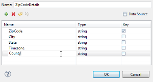 -
In the upper-right corner of the dialog, click Data Source. The Data Source Editor opens, where you can enter your lookup table data.
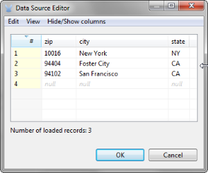 -
Click OK. The new lookup table appears in the input pane.
Creating a CSV Lookup Table
To set up a lookup table backed by a CSV file:
-
Right-click Lookup Tables and choose Add CSV Lookup Table.
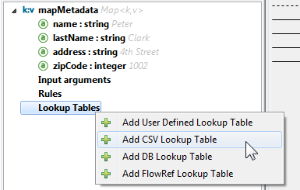 -
In the dialog that opens, enter or browse to the path of your CSV input file. When the column list appears, select the key column(s) for lookups. The other columns are available for use in the assigned scripts and can be populated by the lookup at runtime.
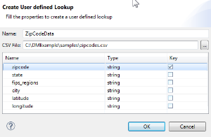The lookup table appears in the input pane.
Creating a Database Lookup Table
The following procedure describes how to create a lookup table backed by a JDBC Database.
-
In the Input pane in the DataMapper view, click the plus sign icon, then select Add DB Lookup Table.
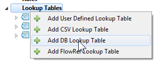 -
The Create DB Lookup dialog appears. In Name field, enter a name for your lookup table.
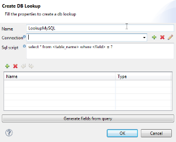 -
For Connection, select a connection from the dropdown, or click the plus icon to create a new JDBC connection.
-
If you create a new JDBC connection, Studio displays the Database connection window. In the Available drivers section, click the appropriate driver for your database. This causes Studio to populate the URL field with a generic URL for that driver (for example, clicking MySQL causes
jdbc:mysql:localhost:3306/<database name>to appear in the URL field). Edit the URL with the relevant values for your connection, replacing the hostname, port and database name as necessary. Then, fill in the rest of the values according to the image and table below.If your preferred database driver is not on the Available drivers list, you can add a new driver manually (see "Available Drivers" in the table below for details).
Field Description Connection
Select an available connection from the drop-down menu, or leave blank and complete the other parameters to create a new connection.
Name
Name for your connection.
User
Database user for querying the database.
Password
Password for the database user.
URL
URL for the database connection.
JNDI
JNDI to use, if appropriate.
Available drivers
Database driver to use. Click the desired driver, or use the buttons to the right of the list:
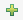 to load the driver from a .JAR file
to manually specify the classname of the JDBC driver.
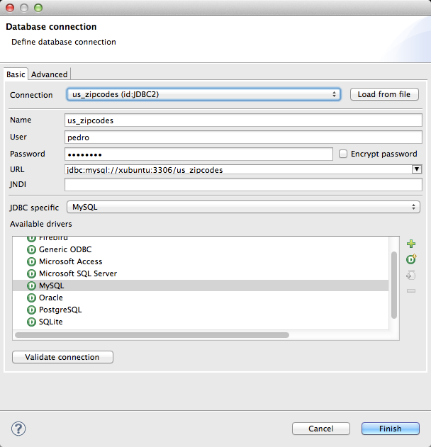 -
Click Validate connection. Studio attempts to communicate with the database and returns a message to indicate success or failure. If you get an error, check your connection parameters and try again.
-
After successfully validating your connection, click Finish. Studio again displays the Create DB Lookup dialog box shown in Step 2.
-
In the SQL script field of the Create DB Lookup window, type your SQL query using the table and column you want to search in. Use the
?character to reference the value of the field that you want to search for. This field must correspond to the name of a field in the DataMapper input.For example, if you want to search by the value of input field
zipCode, you would use the statementSELECT * FROM <table name> WHERE zipCode = ?. During mapping, DataMapper replaces? `with the actual value of the input field `zipCode, and returns the value of the first database row in which thezipCodecolumn matches the value of thezipCodeinput field. So if the value of the input field is94102, the above statement returns the first row obtained by issuingSELECT * FROM <table name> WHERE zipCode = 94102. You can then map the obtained values to your DataMapper output. (See the example for details.) -
Click the Generate fields from query button to test your query and to retrieve metadata about the query results from the source database.
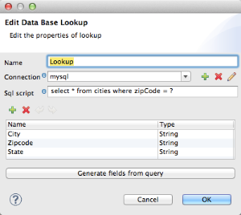Alternatively, enter the metadata for your query result manually, using the plus icon to create new fields.
-
Click OK when finished. Studio adds the lookup table to the Input pane.
Simple Example of DB Lookup
This extremely simple example illustrates the use of database lookups in DataMapper.
In this example, an input CSV file contains customer information including name and last name, street address and ZIP code. DataMapper connects to a database to determine the city in which each customer lives, then adds the city to the output mapping.
This DataMapper example maps from CSV to CSV. The information sources are:
Input CSV File:
Name,lastName,Phone,Address,zipCode
John,Doe,11112222,111 The Avenue,94102
Jane,Doe,33334444,222 The Street,95113Table cities in MySQL database us_zipcodes:
+---------------+---------+-------+
| City | Zipcode | State |
+---------------+---------+-------+
| San Francisco | 94102 | CA |
| San Jose | 95113 | CA |
| Santa Cruz | 95062 | CA |
+---------------+---------+-------+Use the following steps to reproduce the example:
-
Add a DataMapper transformer to your flow, then create a CSV-to-CSV mapping, specifying the relevant input CSV file. To create the output fields, use Generate default.
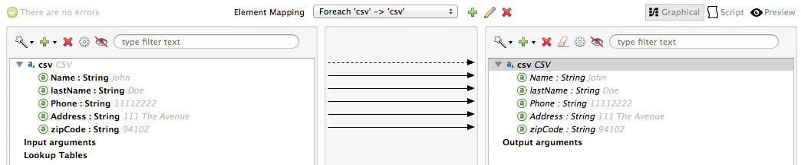 -
In the DataMapper Input pane, right-click Lookup Tables, then select Add DB Lookup Table.
-
In the DB Lookup creation window, configure the connection parameters as explained in the instructions above.
-
After creating and verifying your database connection, enter the SQL script for database lookup. For this example, the script is as follows:
select * from cities where zipCode = ?
-
In the database lookup creation editor, click Generate fields from query. DataMapper queries the database and retrieves the fields in the table.
-
Click OK. After creating the DB lookup, notice that DataMapper’s Input pane displays the fields that it retrieved from the database, as shown below. You can now map these fields to output fields in the mapping.
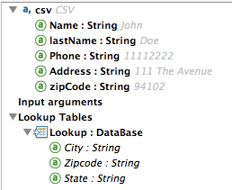 -
Map the input fields to their corresponding output fields. Do not map the
zipCodefield. -
In DataMapper’s Output mapping pane, add a new field called
City, of type string. -
Map the input field
Cityto the output fieldCity. DataMapper displays the Lookup assignment editor, shown below.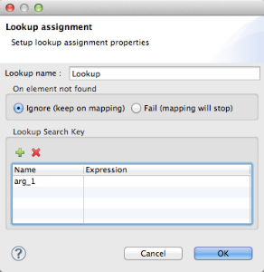 -
In the Lookup assignment editor shown above, you need to add a lookup search key. This is the key that DataMapper uses to retrieve the relevant value from the database – in this case, you have the
zipCodeand need to retrieveCity. To add the key, click the empty space in the Expression column next toarg_1. DataMapper displays a drop-down menu with the available expressions. In this example, selectzipCode.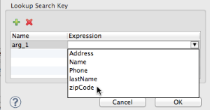To use more than one lookup search key, click the plus icon to add additional keys. Studio inserts these additional keys into the SQL statement in order. -
Click OK. At this point, the mapping is complete. Running a preview of the mapping gives the following result:
"John","Doe","11112222","111 The Avenue","94102","San Francisco" "Jane","Doe","33334444","222 The Street","95113","San Jose"
Creating a FlowRef Lookup Table
-
In the Input pane in the DataMapper view, click the plus sign icon, then select Add FlowRef Lookup Table.
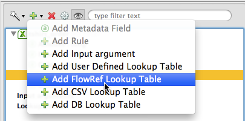 -
In the Create FlowRef Lookup configuration window, edit the fields according to the table below. Use the add and delete icons to add or remove fields for the lookup table. To edit a field, click its value in the editor, type the new value, then press Enter.
Parameter Description Configuration window image Name
User-defined name for the FlowRef lookup table.
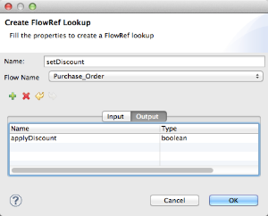
Flow Name
Drop-down menu displays the available flows to select.
-
Click OK to save your changes.
-
After you have defined your lookup table, DataMapper displays the input and output attributes in the Lookup Tables section of the Input pane.
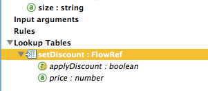 -
Double-click an existing table’s name in the Input pane to edit. For example, to edit the
setDiscountlookup table displayed above, double-clicksetDiscount.
Using a Lookup Output in a Mapping
To map the output attribute of a lookup table to an output field in a mapping:
-
click and drag the output attribute of the lookup table to the corresponding field in the output pane. Edit the fields in the Lookup assignment window according to the table below.
Parameter Description Configuration window image Lookup name
Name of the lookup, by default the name of the lookup table.
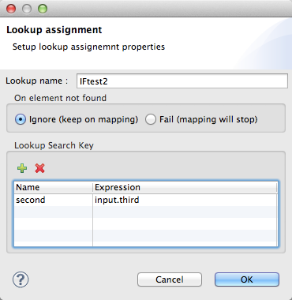
On element not found
Two options:
Ignore (keep on mapping): If a lookup table key is not found, DataMapper continues mapping the remaining fields
Fail (mapping stops): If a lookup table key is not found, DataMapper aborts mapping.
Lookup Search Key
Name of the key, and expression to assign to it. To select an expression to which to assign a key, click the empty space under Expression, then select between the available input fields.
-
Click OK to save your changes.
-
The DataMapper view displays lookup table mappings with a double-dotted line, highlighted below.
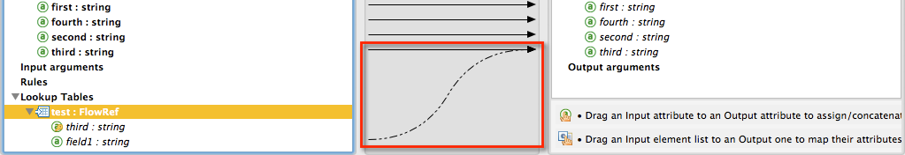In the example displayed above, lookup table
testinvokes another flow, which returns the value of the fieldthird.The lookup table assigns this value to the keyfield1. DataMapper incorporates the value offield1as an input field, then maps it to the output fieldthird.